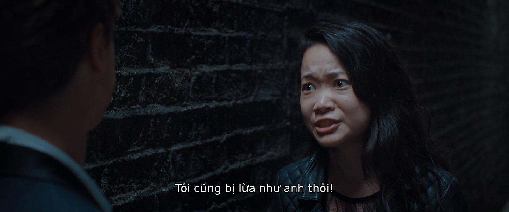
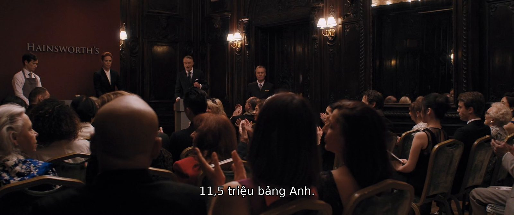
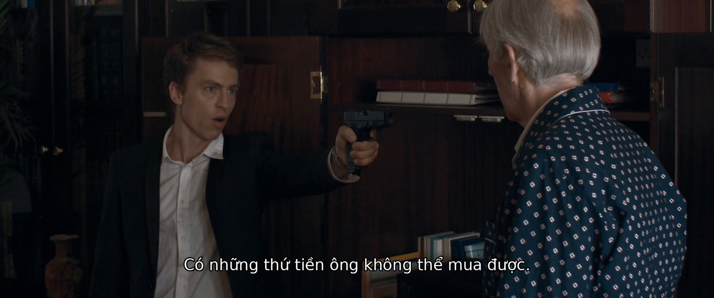
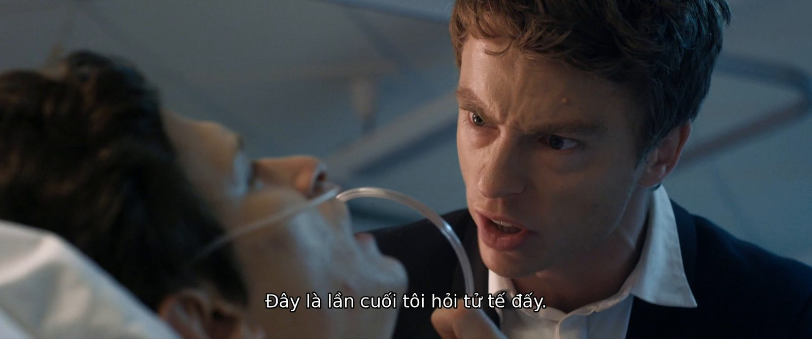
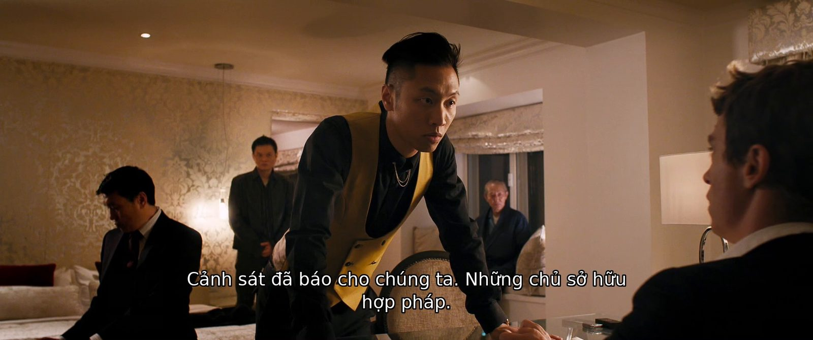

● Hoàn thànhPhim tương tácTội phạm – trộm cướpNhiều kết thúc
Late Shift
Phim tương tác, Wales Interactive / CtrlMovie
Giới thiệu bản Việt hóa
Bản Việt hóa phụ đề và giao diện cho Late Shift – bộ phim tương tác về Matt, cậu sinh viên bị cuốn vào vụ trộm đấu giá ở London. Toàn bộ thoại có phụ đề tiếng Việt, các nút lựa chọn trong lúc xem phim đều đã dịch. Xưng hô theo đúng quan hệ nhân vật: Matt và May-Ling "tôi – cô / tôi – anh", ông trùm Parr "ta – cậu", xã hội đen "tao – mày", Matt khi bị dồn đến đường cùng cũng đổi giọng.
Đã dịch những gì
- Phụ đề toàn bộ phim: mọi nhánh truyện và cả 7 kết thúc
- Các nút lựa chọn trong lúc xem phim
- Giao diện: menu, cài đặt, tên chương, màn hình "Lựa chọn của bạn"
- Tên và mô tả thành tựu
- Xưng hô soát theo quan hệ nhân vật
- Font sẵn của game hiện đủ dấu, không cần vá
Hướng dẫn cài đặt
- Thoát hẳn game (và launcher nếu đang cập nhật).
- Giải nén, chạy CaiVietHoa_LateShift.exe (bộ cài tự tìm thư mục game; không thấy thì bấm "Đổi…" chọn thư mục có LateShift.exe).
- Bấm CÀI VIỆT HÓA, đợi 100%.
- Vào game: Settings → Language → Tiếng Việt, bật Subtitles.
- Muốn gỡ: chạy lại bộ cài → "Gỡ Việt hóa".
Ảnh trong game




